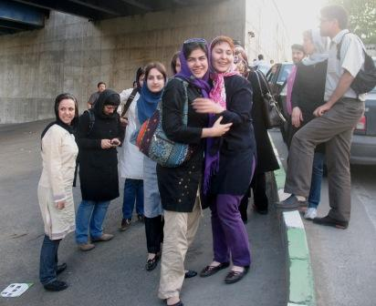
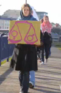
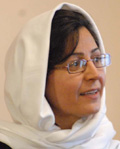

تغییر برای برابری
تغییر برای برابریتغییر برای برابری - بنیاد فمینیست مجوریتی (Feminist Majority Foundation) هر ساله جایزه سراسری حقوق زنان را به تعدادی از فعالان برجسته این حوزه اهدا می کند. کمپین یک میلیون امضا یکی از برندگان این جایزه بین المللی در سال ۲۰۰۹است. این جایزه به خاطر فعالیت های مبتکرانه کمپین یک میلیون امضا در درخواست به پایان دادن به قوانین تبعیض آمیز نسبت به زنان در ایران به این کمپین تعلق گرفته است.
از برندگان این جایزه در سالهای گذشته می توان به افراد برجسته ای چون شیرین عبادی از ایران، دکتر سیما سمر از افغانستان، ینار محمد از عراق، و ریگوبرتا منچو تام از گواتمالا (...)
پذيرش > واژه كليدها > صفحه بندی > گزارش ویژه
گزارش ویژه
مقالهها
-
کمپین یک میلیون امضا برنده «جایزه سراسری حقوق زنان» بنیاد فمینیست مجوریتی
24 مارس 2009, بوسيلهى pari -
 نظرات ستوده و پوربابایی وکلای خدیجه مقدم و محبوبه کرمی
نظرات ستوده و پوربابایی وکلای خدیجه مقدم و محبوبه کرمی
30 مارس 2009, بوسيلهى pariتغییر برای برابری: در پی قبول کفالت ازبازداشت شدگان 6 فروردین و آزادی ده تن از آنها و ادامه بازداشت خدیجه مقدم و محبوبه کرمی صبح امروز خانواده های این دو فعال جنبش زنان و کمپین به همراه وکلای متهمان به دادگاه انقلاب مراجعه کردند.
ستوده وکیل خدیجه مقدم: این برخوردها تعجب برانگیز است نسرین ستوده وکیل خدیجه مقدم پس از خروج از دادگاه در گفتگو با تغییر برای برابری گفت :« در مراجعه ای که برای چندمین بار برای پی گیری پرونده موکلم خانم خدیجه مقدم به دادیاری امنیت داشتم دادیار پرونده اعلام کرد که خانم خدیجه مقدم به دلیل داشتن سابقه آزاد نمی شود. سابقه کیفری را (...) -

به جز جلوه جواهری سایر زنان بازداشت شده در روز کارگر آزاد شدند
17 مه 2009, بوسيلهى pariتغییر برای برابری - به جز جلوه جواهری، سایر زنان بازداشت شده در مراسم روز جهانی کارگر آزاد شدند.
با گذشت 17 روز از بازداشت شرکت کنندگان در مراسم روز جهانی کارگر، درحالی که از ساعت 3 بعد از ظهر امروز، بیست و هفتم اردی بهشت، خانواده های زنان زندانی در مقابل اوین در انتظار آزادی عزیزان شان بودند پس از سه ساعت تعدادی متوجه شدند که زنان را با یک دستگاه مینی بوس از اوین خارج می کنند. این در حالی بود که دقایقی بعد تعدادی از آزاد شدگان خبر دادند که مقابل زندان اوین منتظر خانواده های خود هستند و سرانجام پس از مدتی سایرین را در میدان کاج سعادت آباد از مینی بوس (...) -
آزادی ده تن از فعالان جنبش زنان و ادامه بازداشت خدیجه مقدم و محبوبه کرمی
29 مارس 2009تغییر برای برابری: ده نفر از بازداشت شدگان 6 فروردین با قرار کفالت آزاد شدند. با وجود صدور قرار کفالت برای هر دوازده نفرآنها کفالت خدیجه مقدم و محبوبه کرمی پذیرفته نشد و این دو عضو کمپین همچنان در زندان اوین بازداشت هستند.
امروز صبح پس از مراجعه مجدد خانواده ها و تاکید آنها بر گفته آقایان بازپرس متین راسخ و حیدری فرد بر معرفی کفیل و صدورقرار آزادی، بازهم هرگونه رسیدگی را به 16 فروردین موکول کردند اما سرانجام با پی گیری مصرانه خانواده ها ظهر امروز با پذیرش کفیل موافقت شد. البته بی آنکه دلیلی ذکر شود از قبول کفیل خدیجه مقدم و محبوبه کرمی سر باز زدند. (...) -
اقدامات خانواده ها و پاسخ های مسئولان / خانواده ها: دیگر سکوت نمی کنیم
12 مه 2009, بوسيلهى pariتغییر برای برابری – به رغم پافشاری خانواده ها برای دیدار با سخنگوی قوه قضائیه، این دیدار انجام نشد. خانواده ها با نوشتن نامه هایی به کمیسیون های اصل نود و امنیت ملی به اعتراض خود ادامه دادند، همچنین دادگاه انقلاب نیز به خانواده های زندانیان اعلام کرده است زنان بازداشت شده با ارائه فیش حقوقی آزاد خواهند شد،اما خانواده ها نسبت به ضمانت اجرایی این گفته تردید دارند. حضور خانواده ها در برابر دفتر سخنگوی قوه قضائیه
از ساعت 8 صبح امروز 22 اردیبهشت ماه حدود 25 نفر از اعضای خانواده های بازداشت شدگان روز جهانی کارگر به دفتر سخنگوی قوه قضائیه رفته تا ضمن ملاقات (...) -

کلیپ جدید امنستی درهمبستگی با کمپین و فعالان آن
22 مه 2009, بوسيلهى pariتغییر برای برابری - کلیپ جدید امنستی شعبه انگلستان در همبستگی با کمپین یک میلیون امضا ،
این کلیپ را می توانید در لینک های زیر ببنید ویا دانلود کنید.
به امید آزادی فعالان دربند: جلوه جواهری ، امیریعقوبعلی، کاوه مظفری و پوریا پوشتاره
در همبستگی با کمپین برای برابری
In solidarity with the campaign for equality
یا
http://www.amnesty.org.uk/content.asp?CategoryID=11221
تصاویری از این کلیپ : -

ناهید کشاورز به 3 سال حبس تعلیقی محکوم شد
11 ژوئن 2009, بوسيلهى pariتغییر برای برابری - ناهید کشاورز به 3 سال حبس تعلیقی محکوم شد. او درباره حکم خود در گفتگو با تغییر برای برابری گفت :« دادگاه من 28 فروردین برگزار شد و درآن روز دو پرونده 13 اسفند و 13 فروردین 1386(مربوط به جمع آوری امضاء در پارک لاله) در دادگاه با هم مطرح شد. در حکمی که با امضای رئیس شعبه 28 دادگاه انقلاب اسلامی تهران محمد مقیسه برای پرونده13 اسفند نوشته شده است آمده است :« دادگاه در خصوص اقدام علیه امنیت کشور از طریق اجتماع و تبانی به قصد بر هم زدن امنیت کشور مستندا به ماده 610 قانون مجازات اسلامی نامبرده را به تحمل دو سال حبس با احتساب ایام (...)
-
هوشنگ پوربابایی: عضویت و فعالیت در کمپین هیچ منع قانونی ندارد
27 مه 2009تغییر برای برابری:الناز انصاری - یکی از اولین دغدغه های کمپین در آغاز حرکت جمع آوری یک میلیون امضا، برای تغییر قوانین تبعیض آمیز این بود که مبادا این حرکت با منع قانونی مواجه شود. بعد از مشورت با حقوقدانان ایرانی اعضای این حرکت یقین یافتند، جمع آوری امضا به هر شکل و به هر عنوان طبق قانون جرم نیست.
خواست تغییر قانون به شیوه جمع آوری امضا از شهروندان با آنکه غیرقانونی نبود، بهانه ای برای بازداشت ده ها نفر از کنشگران کمپین شد. عده ای از این افراد تبرئه شدند و عده ای احکام تعلیقی زندان گرفتند. تاکنون بیشتر اتهامات کمپینی ها مشمول ماده 500 می شد که اشد آن برای (...) -
نسرین ستوده: حکم عالیه بر اساس تفتیش عقاید بوده و قانونی نیست
16 فوريه 2009تغییر برای برابری: نسرین ستوده با حضور در دادیاری یکم معاونت امنیت دادسرای انقلاب، همه اتهامات وارده درباره پرونده 23خرداد سال جاری را رد کرد. جلسه دادگاه با اخذ التزام یک میلیون تومانی پایان یافت. این پرونده علیه نسرین ستوده و 8فعال جنبش حقوق زنان در جریان است و مربوط به مراسم برگزار نشده در گالری راه ابریشم است. شش متهم دیگر این پرونده با قرار کفالت 50 میلیون تومانی آزاد شدند ولی حکم قطعی درباره این متهمان هنوز صادر نشده است.
این برنامه با ممناعت پلیس برگزار نشد، با این حال نه نفر از جمله خانم ستوده در آن روز بازداشت شدند و پرونده ای علیه آنها شکل (...) -
بزرگداشت روز جهانی زن در شهربوخوم آلمان
13 مارس 2009, بوسيلهى pariکمپین آلمان - به مناسبت گرامیداشت روز جهانی زن، نمایندۀ کمپین در دوسلدورف، روز یکشنبه 8 مارس سمیناری به دو زبان فارسی و آلمانی در شهر بوخوم برگزار کرد که با استقبال شایان توجهی مواجه شد.
علی طایفی ، پروین اردلان (ارتباط اینترنتی) و رضوان مقدم سخنرانان این برنامه بودند و ناصر ایرانپور ترجمه همزمان سخنرانی ها را بر عهده داشت.
برنامه با سخنان کوتاه میهمان افتخاری، خانم دکتر "فون رنسه" نمایندۀ سابق پارلمان ایالت نوردراین-وستفالن آغاز شد.
"چالشهای زنان ایران در چرخۀ زندگی" عنوان سخنرانی علی طایفی، جامعه شناس مقیم سوئد و رئیس انجمن جامعه شناسان بدون مرزـایران (...)